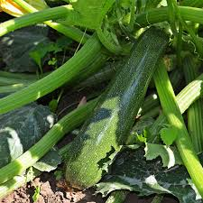
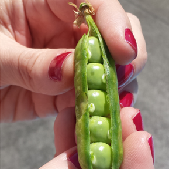

Zucchine
Coltivare in terreno molto ricco di materia organica e non coltivare dopo Solanacce o piante della stessa famiglia delle cucurbitacee
- Varietà: Zucchina chiara di Faenza
- Periodo di semina: Marzo/aprile
- Primo raccolto: Fine Aprile
- Ultimo raccolto: Fine Luglio
- Raccolto:
Dimensioni Quantità Piccole(10cm) 16 Medie(10-16cm) 26 Grandi(>16cm) 9 51
Piselli
American Wonder Varietà media precoce copme ciclo colturale
Consigli
- Piantere in senzaio riscaldato.
È importante:- Acquistare vasetti biodegradabili (di cocco o cartone)
- Mantenere areato il semenzaio per evitare muffe
- Non usare il coperchio del semenzio
- Non mettere il semenzaio vicino al termosifone
- Fissare i sostegni nel terreno non appena le piantine raggiungono i 10cm
- Acquistare una rete coin spoazi di nonp iu di 10cm per garantire sostegni adeguati